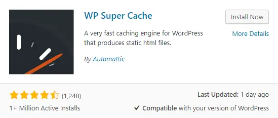

This tutorial is based on wordpress hosting hosting your wordpress website. We have introduced three types of virtual machine hosts to install and deploy wordpress website in detail. If you want to build a perfect wordpress website, you must read this article.
This article introduces in detail how to install wordpress, and solve all the difficult problems you encounter when designing a wordpress website!
WordPress is a free, open-source content management system (CMS) that allows users to create and manage websites and blogs with ease. It was first released in 2003 and has since become one of the most popular CMS platforms on the web, powering around 40% of all websites.
WordPress is built using PHP and MySQL, and offers a wide range of themes and plugins that allow users to customize their website or blog without any programming experience. It provides an intuitive dashboard interface for managing content, media, and site settings, as well as tools for creating custom post types, menus, and widgets.
One of the key strengths of WordPress is its large and active community of developers and users, who contribute to its ongoing development and support through forums, documentation, and third-party resources. Additionally, WordPress is highly scalable and can be used for everything from personal blogs to large-scale enterprise websites.
Why choose wordpress? How to choose a wordpress host? Install WordPress Install a WordPress theme Install a WordPress plugin Optimizing WordPress Performance Publish WordPress Posts Generate a WordPress sitemap Submit to Google Search Console Submit to Bing Webmaster Tools Check the WordPress web index Structured Data Markup in Google Search
There are several reasons why someone might choose WordPress as their content management system:
1、User-friendly: WordPress is known for its user-friendly interface that allows users to manage and publish content with ease, without having any technical knowledge of coding or web design.
2、Customizable: With thousands of free and paid themes and plugins available, you can customize your website's appearance, functionality, and performance to meet your specific needs.
3、SEO optimized: WordPress has a clean code structure and built-in SEO features, making it easier for search engines to index and rank your website.
4、Scalable: Whether you're building a small blog or a large-scale enterprise website, WordPress is scalable and can support your growth.
5、Security: Being open-source software, WordPress benefits from a large community of developers who contribute to improving its security and keeping it up-to-date with the latest security measures.
6、Flexible: WordPress can be used for any type of website, from personal blogs to e-commerce stores, portfolios, and more.
7、Community support: With a large and active community of developers and users, you can get help and support from multiple sources, including forums, documentation, and third-party resources.
These are just some of the reasons why WordPress is a popular choice for many individuals and businesses when it comes to building and managing their websites.
Choosing the right WordPress hosting provider is essential to ensure your website's performance, security, and reliability. Here are some factors to consider when selecting a hosting provider for WordPress:
Choose a hosting provider that offers fast and reliable servers, optimized for WordPress websites. Look for providers that offer features such as SSD drives, caching mechanisms, Content Delivery Networks (CDN), and PHP7+.
Look for a provider that offers a fair pricing model with no hidden fees and transparent billing practices.Choose a hosting provider that offers an easy-to-use interface for managing your WordPress website, including features such as one-click installation and automatic updates.
By considering these factors, you can make an informed decision on which WordPress hosting provider is best suited for your website.
List 14 WordPress hosting providers recommended by this site:
| Provider | Disk | Network | Data Centers | Price | |
| Hostinger | 100G | Unlimited | USA、Hong Kong、UK、Russia | $ 2.99 | Details |
| InterServer | Unlimited | Unlimited | Los Angeles、New Jersey | $ 2.50 | Details |
| Bluehost | Unlimited | Unlimited | United States、Hong Kong、European、Indian | $ 2.95 | Details |
| SugarHosts | Unlimited | Unlimited | United States、Hong Kong、German | $ 4.40 | Details |
| Siteground | 100G | Unlimited | North American、European、Singapore | $ 1.99 | Details |
| GreenGeeks | 50 GB | Unlimited | Dallas、New York、Amsterdam、Hong Kong | $ 2.95 | Details |
| HostGator | Unlimited | Unlimited | United States、Hong Kong | $ 2.75 | Details |
| DreamHost | 50 GB | Unlimited | United States | $ 2.59 | Details |
| Namecheap | Unlimited | Unlimited | United States、Hong Kong | $ 1.58 | Details |
| iPage | Unlimited | Unlimited | United States | $ 1.99 | Details |
| InMotion | Unlimited | Unlimited | Australia、Russia、Indonesia、France | $ 2.29 | Details |
| A2 Hosting | 100 GB | Unlimited | Australia、Russia、Indonesia、France | $ 2.99 | Details |
| FastComet | 15 GB | Unlimited | Australia、Russia、Indonesia、France | $ 2.19 | Details |
| Hostens | 10 GB | 1 TB | Lithuania、Singapore、Washington | $ 0.90 | Details |
1. Choose a Hosting Provider: You need a hosting plan to install WordPress. You can choose from various hosting providers such as Bluehost, SiteGround, or DreamHost.(The following is an example of SiteGround)
Provider Disk Network Data Centers Price Hostinger 100G Unlimited USA、Hong Kong、UK、Russia $ 2.99 Details InterServer Unlimited Unlimited Los Angeles、New Jersey $ 2.50 Details Bluehost Unlimited Unlimited United States、Hong Kong、European、Indian $ 2.95 Details Siteground 100G Unlimited North American、European、Singapore $ 1.99 Details HostGator Unlimited Unlimited United States、Hong Kong $ 2.75 Details DreamHost 50 GB Unlimited United States $ 2.59 Details A2 Hosting 100 GB Unlimited Australia、Russia、Indonesia、France $ 2.99 Details
2. Create a Domain Name: If you haven't already, create a domain name (e.g., yourwebsite.com). Most hosting providers offer a free domain name with their hosting plans.
3. Install WordPress: Most hosting providers offer a 1-click installation of WordPress through their control panel(Take cPanel as an example). Follow the instructions provided by your hosting provider to complete the installation process.
Step 1: Log in to Your cPanel
Step 2: Click On the WordPress Auto Installer
Step 3: Connect Your Domain Name
Step 4: Create Login Credentials
Step 5: Launch Your WordPress Site

4. Log in to Your WordPress Dashboard: After installation, log in to your WordPress dashboard through the URL yourwebsite.com/wp-admin using the username and password created during the installation process.
After logging in, you will see the administrator dashboard. It’s built to give you an overview of your entire website
5. Choose a Theme: Choose a theme that suits the style and requirements of your website. You can browse free or premium themes directly from your WordPress dashboard under Appearance > Themes.
Currently, WordPress.org has over 9,000 free themes to choose from.
6. Customize Your Website: Customize your website by creating pages, adding content, installing plugins, and customizing the appearance through the settings and customization options available in WordPress.
That's it! You have successfully installed WordPress and started building your website!
7. Install a WordPress plugin: directly from the dashboard, manually, and via File Transfer Protocol (FTP). The simplest way to add plugins is by searching for your desired plugin in your WordPress dashboard and installing with a click. The manual or FTP method is typically necessary for premium plugins and plugins not listed in the WordPress plugin directory. These two methods involve uploading a set files to your website from your local device.
Step 1: Go to your WordPress dashboard and log in.
Step 2: On the left-hand side of the dashboard, click on “Plugins” and then click on “Add New”.
Step 3: You can either search for a specific plugin by name in the search bar or browse through popular plugins.
-2.jpeg)
Step 4: Once you find the plugin you want to install, click on the “Install Now” button.
Step 5: Wait for the installation to complete (the button will change to “Activate”), and then click on “Activate” to activate the plugin.
.jpeg)
Step 6: Configure the plugin settings as required.
Step 7: Once the plugin is activated, it will appear in the “Installed Plugins” section where you can activate, deactivate, or delete the plugin if needed.
WordPress is a powerful and feature-rich CMS, but it can be slow and bloated if not optimized properly. Here are some tips to optimize your WordPress site performance:
Choose a good hosting provider: Your website’s loading speed depends on your hosting provider, so choose a reliable hosting provider that has a fast server response time.
Use a caching plugin: Caching plugins like W3 Total Cache or WP Super Cache can dramatically improve your website’s performance by caching static versions of your pages and serving them to visitors.
Optimize images: Optimizing images by compressing them and reducing their size can significantly improve your website’s page load time. Use an image optimization plugin or online tools like TinyPNG to compress your images.
Minimize HTTP requests: Reduce the number of HTTP requests your website makes by minimizing the number of scripts, stylesheets and images loaded on each page.
Use a content delivery network (CDN): A CDN stores your website’s files on multiple servers around the world, making it faster for visitors to access your site from anywhere in the world.
Use a lightweight theme: A lightweight theme with minimal design elements and code can help improve your website’s performance.
Optimize your database: Regularly optimize your database by removing unused data and optimizing tables using plugins like WP-Optimize.
Disable unnecessary plugins: Deactivate and delete any plugins that are not needed as they can slow down your website.
Update WordPress and plugins: Keep your WordPress core and plugins updated to the latest version to ensure compatibility and bug fixes.
By following these tips, you can optimize your WordPress site performance and provide a better user experience for visitors.
You can easily publish a post in WordPress by following these simple steps:
Step 1:Log in to your WordPress dashboard using your admin credentials.
Step 2:Click on the "Posts" option from the left-hand menu and select "Add New."
Step 3:Enter a title for your post in the title field.
Step 4:Write your content in the main editor. You can format the text using the toolbar above the editor.
Step 5:Add media (e.g., images, video) to your post using the "Add Media" button located above the editor.
Step 6:Set a featured image by clicking on the "Set Featured Image" link located on the right-hand side of the page under the "Featured Image" section.
Step 7:Choose or create relevant categories and tags for your post. This helps organize your content and make it easier for visitors to find related posts.
Step 8:Preview your post by clicking on the "Preview" button located on the top right corner of the screen.
Step 9:Once you are satisfied with your post, click on the "Publish" button located on the top right corner of the screen.
Step 10:Congratulations! Your post has been published and is now live on your website.
You can edit or delete your published post at any time by going back to the "Posts" section of your WordPress dashboard and finding your post in the list of published posts.
Sitemap provides a list of all the pages, posts, and other content on your site, which helps search engines like Google crawl and index your site properly. Here is how you can generate a sitemap for your WordPress website:
Step 1:Install and activate a WordPress plugin that generates a sitemap, such as Yoast SEO, All In One SEO Pack, or Google XML Sitemaps.
Step 2:Once activated, go to the settings page for the plugin and look for an option to generate a sitemap.
Step 3:Depending on the plugin, you may be able to customize the sitemap settings, such as what content is included, how frequently it is updated, and so on.
Step 4:Once you have configured the settings, save the changes and generate the sitemap.
Step 5:The plugin will create an XML file containing your sitemap. You can access this file by adding "/sitemap.xml" to the end of your domain name (e.g., www.yoursite.com/sitemap.xml).
Step 6:Finally, submit your sitemap to Google Search Console or other search engines to help them crawl and index your site more effectively.
That’s it! Now you have a sitemap that can help both users and search engines navigate your WordPress site.
Submitting your website to Google Search Console is an important step to help ensure your site is properly indexed and searchable on Google. Here are the steps to submit your website to Google Search Console:
Step 1:Go to the Google Search Console website (https://search.google.com/search-console/).
Step 2:Click on the "Start Now" button.
Step 3:Sign in to your Google account or create a new one if you don't have one.
Step 4:Once you're signed in, click on the "Add a Property" button.
Step 5:Enter your website URL in the field provided and click "Add".
Step 6:Choose the verification method you prefer, such as adding a meta tag to your website's HTML code or uploading an HTML file to your website's root directory.
Step 7:Follow the instructions for verifying ownership of your website.
Step 8:Once verified, go to the dashboard of your Google Search Console account.
Step 9:Click on the "Sitemaps" tab.
Step 10:Add the URL of your sitemap.xml file (e.g., https://www.yoursite.com/sitemap.xml) and click "Submit".
Step 11:You're done! Google will begin crawling your site and indexing it according to its algorithm.
It may take some time for your website to be fully indexed by Google, so be patient and keep creating quality content that is optimized for search engines.
Submitting your website to Bing Webmaster Tools is another important step to help ensure your site is properly indexed and searchable on Bing. Here are the steps to submit your website to Bing Webmaster Tools:
Step 1:Go to the Bing Webmaster Tools website (https://www.bing.com/toolbox/webmaster/).
Step 2:Click on the "Sign In" button.
Step 3:Sign in to your Microsoft account or create a new one if you don't have one.
Step 4:Once you're signed in, click on the "Add Site" button.
Step 5:Enter your website URL in the field provided and click "Add".
Step 6:Choose the verification method you prefer, such as adding a meta tag to your website's HTML code or uploading an XML file to your website's root directory.
Step 7:Follow the instructions for verifying ownership of your website.
Step 8:Once verified, go to the dashboard of your Bing Webmaster Tools account.
Step 9:Click on the "Submissions" tab.
Step 10:Add the URL of your sitemap.xml file (e.g., https://www.yoursite.com/sitemap.xml) and click "Submit".
Step 11:You're done! Bing will begin crawling your site and indexing it according to its algorithm.
Similar to Google, it may take some time for your website to be fully indexed by Bing, so be patient and keep creating quality content that is optimized for search engines.
To check if your WordPress website is being indexed by search engines like Google, you can use the site: operator. Here's how:
Step 1:Open up a web browser and go to Google.com.
Step 2:In the search bar, type in "site:yoursitename.com" (replace "yoursitename" with your actual website domain name) and hit Enter.
Step 3:You will now see a list of all the pages from your website that have been indexed by Google. This can give you an idea of how well your site is performing in search results.
Step 4:If you want more detailed information about your site's index status, you can use Google Search Console. This tool provides in-depth analytics and reports on your website's performance in search results, as well as any errors or issues that may be affecting its ranking.
Step 5:To use Google Search Console, sign up for an account and add your website. Once verified, you can access a wide range of tools and reports to help optimize your site for search engines and improve its visibility online.
Note: If your site is not showing up in Google search results, it could be due to a number of reasons, such as low-quality content, technical issues, or penalties from Google. Make sure to follow best practices for SEO and keep your site updated and optimized to ensure it remains visible to search engines and users.
Structured data markup is a specific type of code that you can add to your website's HTML to help search engines better understand the content on your site. By providing this extra information, search engines like Google can create more detailed and informative search results for users.
Here are some key benefits of using structured data markup:
Step 1:Improved visibility in search results: By using structured data markup, you can help your website stand out in search results by providing more detailed information about your content, such as ratings, reviews, events, product prices, and more.
Step 2:Richer snippets: When you use structured data markup, Google can display richer snippets in search results, which can include images, videos, star ratings, and other relevant details. This can increase click-through rates and improve user engagement with your content.
Step 3:Enhanced search features: Structured data markup can also help you take advantage of advanced search features like Knowledge Graph panels, which can provide quick answers to user queries and help establish your brand as an authoritative source of information in your industry.
<script> { "@context": "http://schema.org", "@type": "Recipe", "name": "Spaghetti Carbonara Recipe", "author": { "@type": "Person", "name": "John Doe" }, "image": "https://example.com/spaghetti-carbonara.jpg", "datePublished": "2021-09-01", "description": "Learn how to make delicious spaghetti carbonara at home with this simple recipe.", "recipeIngredient": [ "1 pound spaghetti", "4 ounces pancetta, diced", "4 large eggs", "1 cup grated Parmesan cheese", "1 tablespoon olive oil", "2 cloves garlic, minced", "Salt and pepper to taste" ], "recipeInstructions": [ { "@type": "HowToStep", "text": "Bring a large pot of salted water to a boil. Add the spaghetti and cook until al dente, about 8 minutes." }, { "@type": "HowToStep", "text": "While the pasta is cooking, heat the olive oil in a large skillet over medium heat. Add the pancetta and garlic and cook until the pancetta is crispy, about 5 minutes." }, { "@type": "HowToStep", "text": "In a large bowl, beat the eggs together with the Parmesan cheese and a pinch of salt and pepper." }, { "@type": "HowToStep", "text": "When the spaghetti is done, drain it and reserve 1 cup of the pasta water." }, { "@type": "HowToStep", "text": "Add the drained spaghetti to the skillet with the pancetta and garlic and toss to combine." }, { "@type": "HowToStep", "text": "Remove the skillet from the heat and let it cool for a minute or two, then add the egg and cheese mixture to the skillet and toss well to coat the spaghetti. Add some of the reserved pasta water if the sauce seems too thick." }, { "@type": "HowToStep", "text": "Serve immediately, garnished with additional grated Parmesan cheese if desired." } ], "recipeYield": "4 servings" } </script>
To get started with structured data markup, you'll need to add schema.org tags to your website's HTML. Schema.org provides a standard vocabulary of tags that can be used to describe different types of content, including products, articles, recipes, events, and more. Once you've added the appropriate tags to your site, you can test your markup using Google's Structured Data Testing Tool to ensure it's working correctly. Then, sit back and watch as your rich snippets and enhanced search features begin to appear in Google search results!
Q: What is WordPress hosting?
WordPress hosting is a type of web hosting service that is specifically designed and optimized to meet the performance and security needs of WordPress websites. It offers features such as automatic software updates, pre-installed WordPress software, enhanced security, expert support, and more.
Q: What are the benefits of using WordPress hosting?
Some of the benefits of using WordPress hosting include:
Faster website load times and better performance
Enhanced website security (e.g. SSL certificates, firewalls, malware scanning)
Automatic WordPress updates and backups
Expert WordPress support from hosting providers
Pre-installed caching and optimization tools
Q: How do I choose the best WordPress hosting provider?
When choosing a WordPress hosting provider, you should consider factors such as hosting reliability, website speed, security measures, customer support, pricing, and user reviews. Some of the popular WordPress hosting providers include Bluehost, SiteGround, WP Engine, and DreamHost.
Q: Do I need technical skills to use WordPress hosting?
While technical skills are not necessarily required to use WordPress hosting, having some knowledge of WordPress, website design, and web hosting can be helpful. However, most WordPress hosting providers offer user-friendly interfaces and support to help users set up and manage their websites.
Q: Can I migrate my existing WordPress website to WordPress hosting?
Yes, you can usually migrate your existing WordPress website to WordPress hosting by using plugins or other migration tools provided by your hosting provider. Alternatively, many hosting providers offer free migration services to help users move their websites to their hosting platform.
Q: Is WordPress hosting expensive?
The cost of WordPress hosting can vary depending on the hosting provider and the level of service you require. Shared WordPress hosting plans can start at just a few dollars per month, while managed WordPress hosting plans can range from $20-$100+ per month.

This tutorial is based on wordpress hosting hosting your wordpress website. We have introduced three types of

CentOS is a Linux distribution that can be used as an operating system to host web applications like WordPress.

Ubuntu is a popular open-source operating system based on the Linux kernel. It is known for its user-friendly
This tutorial is based on wordpress hosting hosting your wordpress website. We have introduced three types of